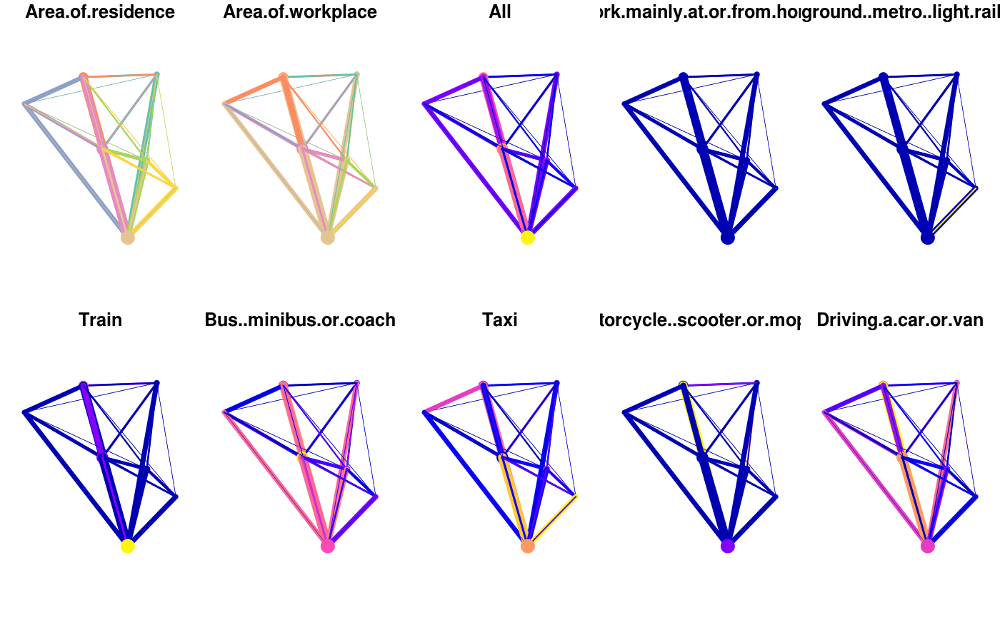
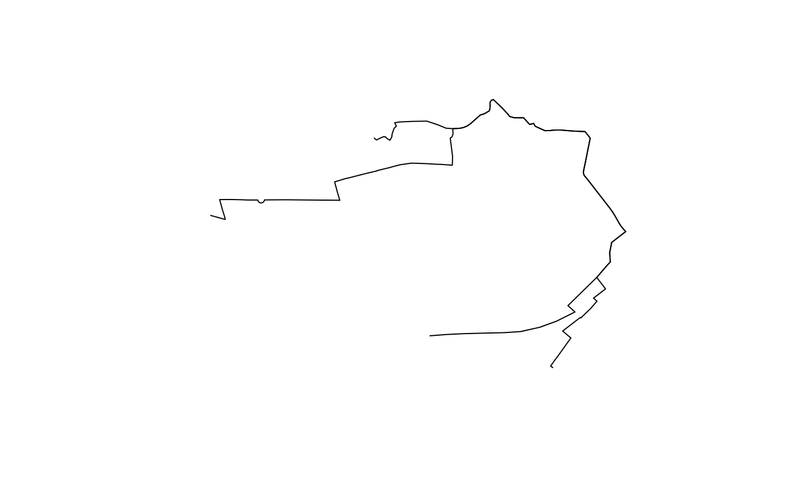

stplanr is a package for sustainable transport planning with R.
It provides functions for solving common problems in transport planning and modelling, such as how to best get from point A to point B. The overall aim is to provide a reproducible, transparent and accessible toolkit to help people better understand transport systems and inform policy, as outlined in a paper about the package, and the potential for open source software in transport planning in general, published in the R Journal.
The initial work on the project was funded by the Department of Transport (DfT) as part of the development of the Propensity to Cycle Tool (PCT), a web application to explore current travel patterns and cycling potential at zone, desire line, route and route network levels (see www.pct.bike and click on a region to try it out). The basis of the methods underlying the PCT is origin-destination data, which are used to highlight where many short distance trips are being made, and estimate how many could switch to cycling. The results help identify where cycleways are most needed, an important component of sustainable transport planning infrastructure engineering and policy design. See the package vignette (e.g. via vignette("introducing-stplanr")) or an academic paper on the Propensity to Cycle Tool (PCT) for more information on how it can be used. This README provides some basics.
stplanr should be useful to researchers everywhere. The function route_graphhopper(), for example, works anywhere in the world using the graphhopper routing API and read_table_builder() reads-in Australian data. We welcome contributions that make transport research easier worldwide.
Key functions
Data frames representing flows between origins and destinations must be combined with geo-referenced zones or points to generate meaningful analyses and visualisations of ‘flows’ or origin-destination (OD) data. stplanr facilitates this with od2line(), which takes flow and geographical data as inputs and outputs spatial data. Some example data is provided in the package:
Let’s take a look at this data:
flow[1:3, 1:3] # typical form of flow data
#> Area.of.residence Area.of.workplace All
#> 920573 E02002361 E02002361 109
#> 920575 E02002361 E02002363 38
#> 920578 E02002361 E02002367 10
cents_sf[1:3,] # points representing origins and destinations
#> Simple feature collection with 3 features and 4 fields
#> geometry type: POINT
#> dimension: XY
#> bbox: xmin: -1.546463 ymin: 53.8041 xmax: -1.511861 ymax: 53.81161
#> epsg (SRID): 4326
#> proj4string: +proj=longlat +datum=WGS84 +no_defs
#> geo_code MSOA11NM percent_fem avslope geometry
#> 1708 E02002384 Leeds 055 0.458721 2.856563 POINT (-1.546463 53.80952)
#> 1712 E02002382 Leeds 053 0.438144 2.284782 POINT (-1.511861 53.81161)
#> 1805 E02002393 Leeds 064 0.408759 2.361707 POINT (-1.524205 53.8041)These datasets can be combined as follows:
travel_network <- od2line(flow = flow, zones = cents_sf)
w <- flow$All / max(flow$All) *10
plot(travel_network, lwd = w)
The package can also allocate flows to the road network, e.g. with CycleStreets.net and the OpenStreetMap Routing Machine (OSRM) API interfaces. These are supported in route_*() functions such as route_cyclestreets and route_osrm():
Route functions take lat/lon inputs (results not calculated):
and place names, found using the Google Map API:
We can replicate this call multiple times using line2route, in this case lines 2 to 5. First we’ll create a small subset of the lines:
Next, we’ll calculate the routes (not not evaluated):
The resulting routes will look something like this:

For more examples, example("line2route").
overline is a function which takes a series of route-allocated lines, splits them into unique segments and aggregates the values of overlapping lines. This can represent where there will be most traffic on the transport system, as demonstrated in the following code chunk.
routes$All <- desire_lines$All
rnet <- overline2(routes, attrib = "All")
#> 2019-07-06 11:44:27 constructing segments
#> 2019-07-06 11:44:27 building geometry
#> 2019-07-06 11:44:27 simplifying geometry
#> 2019-07-06 11:44:27 aggregating flows
#> 2019-07-06 11:44:27 rejoining segments into linestringsThe route network can be visualised as follows:
Installation
To install the stable version, use:
The development version can be installed using devtools:
# install.packages("devtools") # if not already installed
devtools::install_github("ropensci/stplanr")
library(stplanr)stplanr depends on rgdal, which can be tricky to install.
Installing stplanr on Linux and Mac
splanr depends on rgdal which can be installed on Ubuntu, for example, with:
sudo apt install r-cran-rgdalTo install gdal binaries on other distributions please see here: http://trac.osgeo.org/gdal/wiki/DownloadingGdalBinaries
stplanr also depends on sf. Installation instructions for Mac, Ubuntu and other Linux distros can be found here: https://github.com/r-spatial/sf#installing
Instructions to install gdal and Quartz are provided at https://github.com/ropensci/geojsonio#install and https://www.xquartz.org/ respectively (Quartz is required for R - as described here).
Funtions, help and contributing
The current list of available functions can be seen on the package’s website at ropensci.github.io/stplanr/, or with the following command:
To get internal help on a specific function, use the standard way.
To contribute, report bugs or request features, see the issue tracker.
Further resources / tutorials
Want to learn how to use open source software for reproducible sustainable transport planning work? Now is a great time to learn. Transport planning is a relatively new field of application in R. However, there are already some good resources on the topic, including (any further suggestions: welcome):
- The Transport chapter of Geocomputation with R, which provides a broad introduction from a geographic data perspective: https://geocompr.robinlovelace.net/transport.html
- The
stplanrpaper, which describes the context in which the package was developed: https://journal.r-project.org/archive/2018/RJ-2018-053/index.html - The
dodgrvignette, which provides an introduction to routing in R: https://cran.r-project.org/package=dodgr/vignettes/dodgr.html
Meta
- Please report issues, feature requests and questions to the github issue tracker
- License: MIT
- Get citation information for
stplanrin R doingcitation(package = 'stplanr') - This project is released with a Contributor Code of Conduct. By participating in this project you agree to abide by its terms.